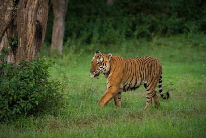
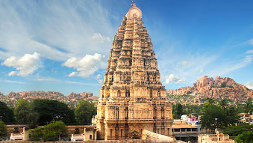

Famous Cities
Bengaluru
- Vidhana Soudha: An iconic building housing the Karnataka Legislative Assembly, known for its stunning architecture.
- Lalbagh Botanical Garden: A sprawling garden featuring diverse flora, a lake, and a glass house, perfect for nature lovers.
- Bangalore Palace: A historic palace inspired by England's Windsor Castle, showcasing royal heritage and architecture.

- Cubbon Park: A large park in the city center, ideal for jogging, picnics, and enjoying nature.
- ISKCON Temple: A beautiful temple dedicated to Lord Krishna, known for its architecture and peaceful ambiance.
- Bannerghatta National Park: A wildlife park featuring a zoo, safari, and trekking opportunities.
Mysuru
- Mysore Palace: An iconic palace known for its stunning architecture and rich history, especially illuminated at night.
- Chamundi Hill: A prominent hill offering a panoramic view of the city, home to the famous Chamundeshwari Temple.
- St. Philomena's Church: One of the largest churches in India, known for its neo-gothic architecture.

- Brindavan Gardens: Famous for its terrace gardens, musical fountain, and beautiful landscaping, ideal for evening strolls.
- Mysore Zoo: One of the oldest and well-maintained zoos in India, home to a diverse range of animals.
- Rail Museum: A unique museum showcasing vintage locomotives and rail memorabilia.
Mangaluru
- Panambur Beach: A popular beach known for its golden sands, water sports, and scenic views.
- Kadri Manjunath Temple: An ancient temple dedicated to Lord Manjunatha, famous for its unique architecture.
- Mangaladevi Temple: A historic temple dedicated to the city's namesake goddess, known for its beautiful surroundings.

- St. Aloysius Chapel: A stunning chapel famous for its beautiful frescoes and historic significance.
- Surathkal Beach: A tranquil beach known for its lighthouse and serene environment.
- Ullal Beach: A picturesque beach ideal for relaxing and enjoying the sunset views.
Hubli-Dharwad
- Unkal Lake: A scenic lake ideal for picnics, boating, and enjoying nature.
- Indira Gandhi Glass House Garden: A beautifully landscaped garden featuring a glass house and vibrant flower beds.
- Dharwad Fort: A historic fort with impressive architecture and a view of the surrounding area.

- Bhavanishankar Temple: An ancient temple known for its unique architecture and religious significance.
- Shri Siddharoodha Math: A spiritual center dedicated to the revered saint Siddharoodha, attracting many visitors.
- Navalgund Fort: A historic site offering insights into the region's past and stunning views of the landscape.
Belagavi
- Belgaum Fort: A historic fort that offers panoramic views of the city, showcasing ancient architecture and history.
- Kamala Basti: A beautiful temple complex known for its intricate carvings and religious significance.
- Gadag Jamboti Forest: A serene forest area perfect for nature lovers and trekking enthusiasts.

- Mahabaleshwar Temple: An ancient temple dedicated to Lord Shiva, renowned for its architecture and spiritual significance.
- Rudra Sagara Lake: A picturesque lake ideal for relaxation and boating activities.
- Shri Ramakrishna Ashram: A spiritual center that promotes peace and meditation, attracting visitors from all over.
Natural Attractions
Coorg
- Abbey Falls: A stunning waterfall surrounded by lush coffee plantations, offering a picturesque view.
- Dubare Elephant Camp: An eco-tourism spot where visitors can interact with elephants and learn about their care.
- Talakaveri: The birthplace of the River Kaveri, featuring a beautiful temple and scenic viewpoints.

- Raja’s Seat: A scenic viewpoint offering breathtaking sunset views amidst rolling hills and valleys.
- Pushpagiri Wildlife Sanctuary: A haven for nature lovers, rich in biodiversity and home to various wildlife species.
- Coffee Plantations: Explore the famous coffee estates and enjoy guided tours to learn about coffee cultivation.
Jog Falls
- Overview: Jog Falls, also known as Geru Falls, is one of the highest waterfalls in India, dropping approximately 253 meters.
- Location: Situated in the Shimoga district of Karnataka, surrounded by lush greenery and scenic views.
- Activities: Visitors can enjoy trekking, photography, and exploring nearby viewpoints.

- Best Time to Visit: The ideal time to visit Jog Falls is during the monsoon season (June to September) when the waterfall is at its fullest.
- Nearby Attractions: Consider visiting the nearby Sharavathi River, Linganamakki Dam, and the picturesque village of Talaguppa.
- Travel Tips: Carry comfortable shoes for trekking, and plan to visit early in the morning to avoid crowds.
Nandi Hills
- Tipu Sultan's Summer Palace: A historic palace offering stunning views and rich architectural heritage.
- Nandi Temple: An ancient temple dedicated to Nandi, known for its intricate carvings and spiritual significance.
- Sunrise Point: A breathtaking viewpoint perfect for witnessing stunning sunrises over the hills.

- Bhoga Nandeeshwara Temple: A beautifully carved ancient temple with stunning architecture.
- Nature Trails: Scenic trekking paths offering picturesque views and a chance to explore the rich flora and fauna.
- Paragliding: An adventure activity that allows you to soar high and enjoy aerial views of the hills and valleys.
Sakleshpur
- Manjarabad Fort: A scenic fort offering breathtaking views of the Western Ghats, perfect for history and nature enthusiasts.
- Hebbe Falls: A stunning waterfall surrounded by lush greenery, accessible via a trek that adds to the adventure.
- Brahmagiri Hill: An ideal trekking destination with beautiful landscapes and rich biodiversity.

- Agni Gudda Hill: A lesser-known trekking spot offering stunning views and an opportunity to explore the flora and fauna.
- Coffee Plantations: The region is famous for its coffee estates, where visitors can learn about coffee production and enjoy the serene landscape.
- Soothanahalli: A picturesque village known for its scenic beauty, perfect for a relaxing getaway.
Bandipur National Park
- Wildlife Sanctuary: Home to diverse species, including elephants, tigers, and various birds, perfect for wildlife enthusiasts.
- Nature Trails: Scenic trails for trekking and exploring the lush landscapes and rich biodiversity of the park.
- Safari Rides: Exciting jeep and bus safaris available to explore the park and spot wildlife.

- Flora and Fauna: Rich vegetation including teak, rosewood, and various wildlife, providing a thriving ecosystem.
- Viewpoints: Scenic viewpoints offering breathtaking vistas of the Western Ghats.
- Conservation Efforts: Initiatives in place for wildlife conservation and education to protect the park's biodiversity.
Temples
Virupaksha Temple
- Historical Significance: A UNESCO World Heritage Site, the temple is dedicated to Lord Shiva and is one of the oldest temples in India, dating back to the 7th century.
- Architecture: Known for its stunning Dravidian architecture, the temple features intricate carvings and a towering gopuram (gateway).
- Puja and Festivals: The temple hosts various religious ceremonies and festivals, attracting thousands of devotees and tourists.

- Inner Sanctum: The temple houses a shrine with a linga (symbol of Shiva), where daily rituals are performed.
- Nearby Attractions: Located near the ancient city of Hampi, the temple is surrounded by stunning ruins and landscapes.
- Visitor Experience: The temple provides a serene atmosphere for meditation and reflection, making it a must-visit for spiritual seekers.
Sri Chennakeshava Temple
- Location: Located in the town of Belur, Karnataka, the temple is a stunning example of Hoysala architecture.
- Architectural Style: Known for its intricate carvings, detailed sculptures, and stunning star-shaped base.
- Deity: Dedicated to Lord Vishnu, the temple showcases exquisite artistry that reflects devotion and craftsmanship.

- Historical Significance: Built in the 12th century, the temple is a UNESCO World Heritage site, highlighting the region's rich history.
- Festivals: The temple hosts various festivals throughout the year, drawing pilgrims and tourists alike.
- Visiting Tips: Visitors are advised to dress modestly and respect the religious sentiments of the place.
Hoysaleswara Temple
- Hoysaleswara Temple: A stunning example of Hoysala architecture, dedicated to Lord Shiva, featuring intricate carvings and detailed sculptures.
- Kedareshwara Temple: Another exquisite temple nearby, known for its beautiful stone work and serene surroundings.
- Hoysala Crafts Museum: A museum showcasing the rich artistic heritage of the Hoysala dynasty and traditional crafts.

- Chennakesava Temple: A nearby temple dedicated to Lord Vishnu, also known for its intricate architecture.
- Jain Basadi: A beautiful Jain temple featuring exquisite carvings and a peaceful atmosphere.
- Halebid Museum: A museum that houses sculptures and artifacts from the Hoysala period, offering insights into the region's history.
Bull Temple
- Bull Temple: Located in Basavanagudi, this temple is dedicated to Nandi, the sacred bull, and is known for its stunning architecture and a massive monolithic statue of Nandi.
- Dodda Ganesh Temple: Adjacent to the Bull Temple, this temple features a large idol of Lord Ganesha.
- Basavanagudi Lake: A beautiful lake nearby, perfect for leisurely walks and enjoying the scenery.

- Bugle Rock Park: A nearby park with beautiful landscapes, ideal for family outings and relaxation.
- Raja Ram Mohan Roy Park: A park located close to the temple, providing a serene environment for visitors.
- Shopping at Basavanagudi: The area around the temple offers various local shops and markets for traditional goods.
festivals and event
Dasara Festival in Karnataka
- Overview: Dasara, also known as Dussehra, is a prominent festival celebrated in Karnataka, especially in Mysore, symbolizing the victory of good over evil.
- Dasara Procession: The grand procession in Mysore features the majestic elephant carrying the idol of Goddess Chamundeshwari, along with folk performances and cultural displays.
- Navaratri Celebrations: The festival spans nine nights, filled with cultural events, music, dance, and elaborate decorations.

- Cultural Programs: Various cultural events, including music and dance performances, are organized across the city during this festive time.
- Shopping and Festivities: Markets are adorned with lights and decorations, and people shop for traditional attire and festive items.
- Food Festivals: Local cuisine is celebrated, with stalls offering delicious traditional dishes and sweets.
Karaga Festival
- Overview: Karaga is a traditional festival celebrated in Karnataka, particularly in Bangalore, to honor the goddess Draupadi.
- Significance: The festival symbolizes the triumph of good over evil and is celebrated with vibrant processions and rituals.
- Duration: Karaga is typically celebrated for three days, culminating in a grand procession.

- Rituals: The festival features various rituals, including the carrying of the Karaga (a decorated pot) on the head by male devotees.
- Procession: A vibrant procession through the streets of Bangalore, accompanied by traditional music and dance.
- Community Involvement: The festival involves significant participation from the local community, fostering unity and cultural heritage.